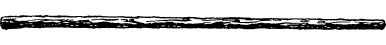
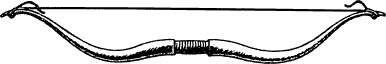
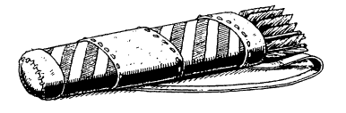
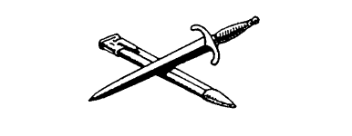
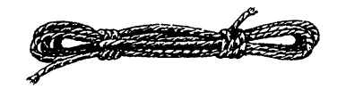
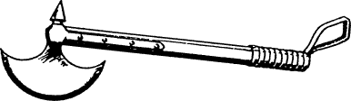

Equipment
Before you set off on your long journey to Sommerlund you take with you a map of Northern Magnamund and a pouch of gold. To find out how much gold is in the pouch, pick a number from the Random Number Table and add 20 to the number you have picked. The total equals the number of Gold Crowns inside the pouch, and you should now enter this number in the ‘Gold Crowns’ section of your Action Chart.
If you have successfully completed any of the previous Lone Wolf adventures (Books 1–17), you may add this sum to the total sum of Crowns you already possess. Fifty Crowns is the maximum you can carry, but additional Crowns can be left in safekeeping at your monastery.
You can take four items from the list below, again adding to these, if necessary, any you may already possess from previous adventures (remember, you are still limited to two Weapons, but you may now carry a maximum of ten Backpack Items).
- Quarterstaff (Weapons)

- Bow (Weapons)

- Quiver (Special Items) This contains six Arrows; record them on your Action Chart.

- Dagger Weapons)

- Sword (Weapons)

- 2 Meals (Meals) Each Meal takes up one space in your Backpack.

- Rope (Backpack Item)

- Potion of Laumspur (Backpack Item) This potion restores 4 ENDURANCE points to your total when swallowed after combat. There is enough for only one dose.

- Axe (Weapons)

{kind=link}
{kind=link}
{kind=link}
{kind=link}
{kind=link}
{kind=link}
List the four items that you choose on your Action Chart, under the appropriate headings, and make a note of any effect they may have on your ENDURANCE points or COMBAT SKILL.
How to Use Your Equipment
- Weapons
- The maximum number of Weapons that you can carry is two. Weapons aid you in combat. If you have the Grand Master Discipline of Grand Weaponmastery and a correct weapon, it adds 5 points to your COMBAT SKILL. If you find a Weapon during your adventure, you may pick it up and use it. You may only use one Weapon at a time in combat.
- Bows and Arrows
- During your adventure there will be opportunities to use a Bow and Arrow. If you equip yourself with this weapon, and you possess at least one Arrow, you may use it when the text of a particular section allows you to do so. The Bow is a useful weapon, for it enables you to hit an enemy at a distance. However, a Bow cannot be used in hand-to-hand combat; therefore it is strongly recommended that you also equip yourself with a close combat weapon, such as a Sword or an Axe.
In order to use a Bow you must possess a Quiver and at least one Arrow. Each time the Bow is used, erase an Arrow from your Action Chart. A Bow cannot, of course, be used if you exhaust your supply of Arrows, but the opportunity may arise during your adventure for you to replenish your stock of Arrows.
- Backpack Items
- These must be stored in your Backpack. Because space is limited, you may keep a maximum of ten articles, including Meals, in your Backpack at any one time. You may only carry one Backpack at a time. During your travels you will discover various useful items which you may decide to keep. You may exchange or discard them at any point when you are not involved in combat.
Any item that may be of use, and which can be picked up on your adventure and entered on your Action Chart is given either initial capitals (e.g. Gold Dagger, Magic Pendant), or is clearly labelled as a Backpack Item. Unless you are told that it is a Special Item, carry it in your Backpack.
- Special Items
- Special Items are not carried in the Backpack. When you discover a Special Item, you will be told how or where to carry it. The maximum number of Special Items that can be carried on any adventure is twelve.
- Food
- Food is carried in your Backpack. Each Meal counts as one item. You will need to eat regularly during your adventure. If you do not have any food when you are instructed to eat a Meal, you will lose 3 ENDURANCE points. If you have chosen the Discipline of Grand Huntmastery as one of your skills, you will not need to tick off a Meal when instructed to eat.
- Potion of Laumspur
- This is a healing potion that can restore 4 ENDURANCE points to your total when swallowed after combat. It cannot be used to increase ENDURANCE points immediately prior to a combat. There is enough for one dose only. If you discover any other potion during the adventure, you will be informed of its effect. All potions are Backpack Items.
- Gold Crowns
- The currency of central Northern Magnamund is the Lune, but Gold Crowns are readily accepted at an exchange rate of four Lune for every one Gold Crown.